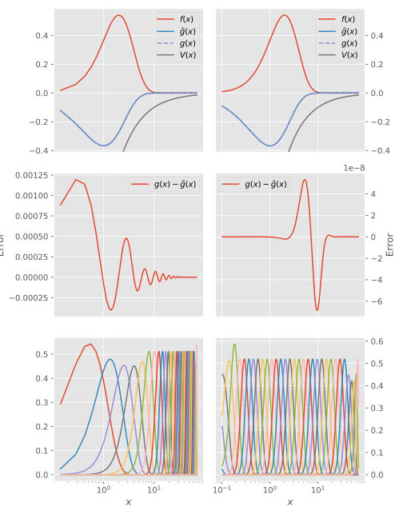

Approximating operators
As mentioned in Solving equations, the action of a linear operator on a spline can be approximated by projecting the operator into the space $\space{P}_{t,k}$: $\mat{L}\defd B^H\operator{L}B$. We can employ this for different kinds of operators; out-of-the-box, BSplinesQuasi.jl supports differential operators and diagonal operators:
Differential operators
In the ContinuumArrays framework, differential operators are represented by the Derivative operator, which operates in a domain (typically the first axis of an ContinuumArrays.QuasiArrays.AbstractQuasiMatrix, e.g. a ContinuumArrays.Basis such as BSpline):
julia> using BSplinesQuasi
julia> B = BSpline(LinearKnotSet(3, 0, 1, 3))
BSpline{Float64} basis with LinearKnotSet(Float64) of order k = 3 (parabolic) on 0.0..1.0 (3 intervals)
julia> D = Derivative(axes(B,1))
Derivative{Float64,IntervalSets.Interval{:closed,:closed,Float64}}(ContinuumArrays.QuasiArrays.Inclusion{Float64,IntervalSets.Interval{:closed,:closed,Float64}}(0.0..1.0))The derivative operator can then be projected into the space generated by the knot set t by
julia> ∇ = B'D*B
5×5 BandedMatrix{Float64,Array{Float64,2},Base.OneTo{Int64}}:
-0.5 0.416667 0.0833333 ⋅ ⋅
-0.416667 2.07997e-17 0.375 0.0416667 ⋅
-0.0833333 -0.375 7.84759e-17 0.375 0.0833333
⋅ -0.0416667 -0.375 -1.31839e-16 0.416667
⋅ ⋅ -0.0833333 -0.416667 0.5Diagonal operators
Diagonal operators are operators that only depend on the coordinate; they are also called local operators. Typical examples are potentials, such as the Coulomb potential $V(x) = Q/x$, generated by a charge $Q$. This potential is not polynomial, i.e. we cannot compute its matrix elements exactly using Gauß–Legendre quadrature, but with high enough order and intelligent placement of the knots, we can get sufficient accuracy.
Diagonal operators are projected into the B-spline space using the Matrix function:
Base.Matrix — Type.Matrix(f, B)Generate the matrix representing the diagonal operator f in the B-spline space B.
Examples
julia> Matrix(x -> x, BSpline(LinearKnotSet(3, 0, 1, 3)))
5×5 BandedMatrices.BandedMatrix{Float64,Array{Float64,2},Base.OneTo{Int64}}:
0.0037037 0.00462963 0.000925926 ⋅ ⋅
0.00462963 0.0259259 0.0236111 0.00138889 ⋅
0.000925926 0.0236111 0.0916667 0.0458333 0.00462963
⋅ 0.00138889 0.0458333 0.0851852 0.0342593
⋅ ⋅ 0.00462963 0.0342593 0.062963As as example of the importance of knot placement, we study the action of the Coulomb operator $\operator{V}(x) = -1/x$ on the function $f(x)=x^2\exp(-x)$; we know that the result should be $g(x)=\operator{V}(x)f(x)=-x\exp(-x)$:
julia> k = 7
7
julia> N = 31
31
julia> a,b = 0,70
(0, 70)
julia> coulomb(r) = -1/r
coulomb (generic function with 1 method)
julia> tlin = LinearKnotSet(k, a, b, N);
julia> texp = ExpKnotSet(k, -1.0, log10(b), N);
julia> Blin = BSpline(tlin,3)[:,2:end-1]
BSpline{Float64} basis with LinearKnotSet(Float64) of order k = 7 on 0.0..70.0 (31 intervals), restricted to basis functions 2..36 ⊂ 1..37
julia> Bexp = BSpline(texp,3)[:,2:end-1]
BSpline{Float64} basis with ExpKnotSet(Float64) of on order k = 7 on 0,0.1..70.00000000000001 (31 intervals), restricted to basis functions 2..36 ⊂ 1..37Then, for B=Blin and B=Bexp, we do the following:
S = B'B
f = B \ x -> x^2*exp(-x)
V = Matrix(coulomb, B)
g̃ = S \ V*fand obtain two different approximations g̃ to $g(x)$, as shown in the following plot:
